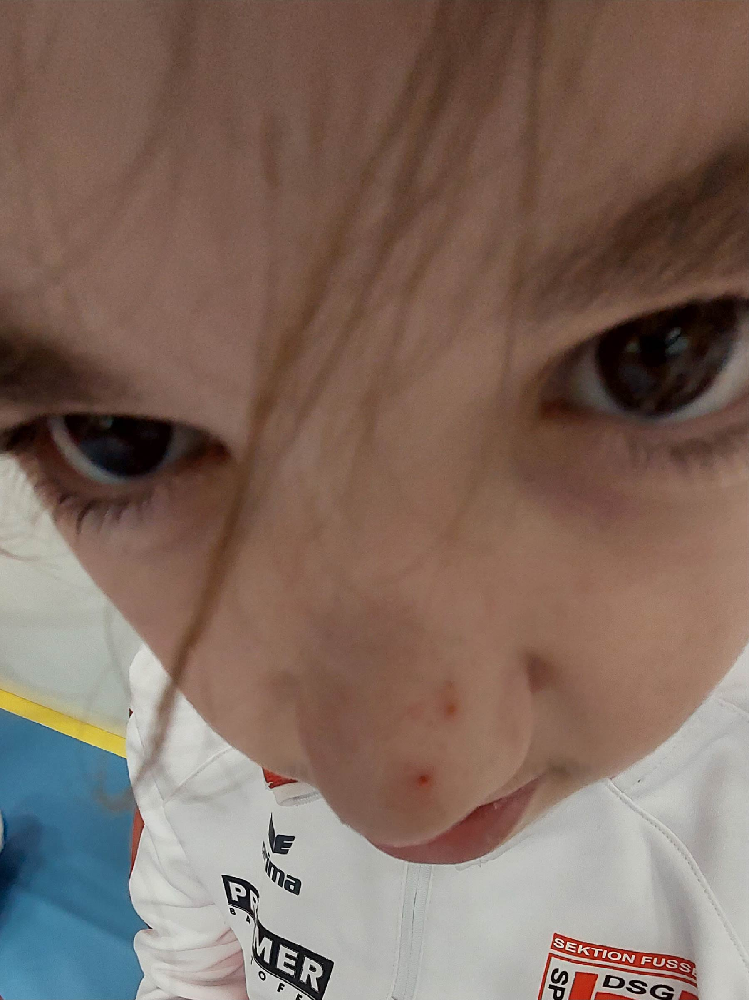
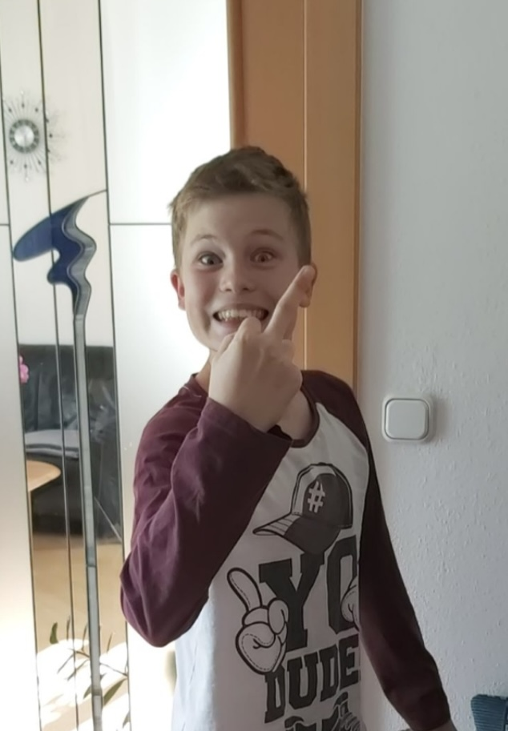
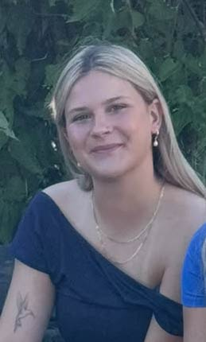
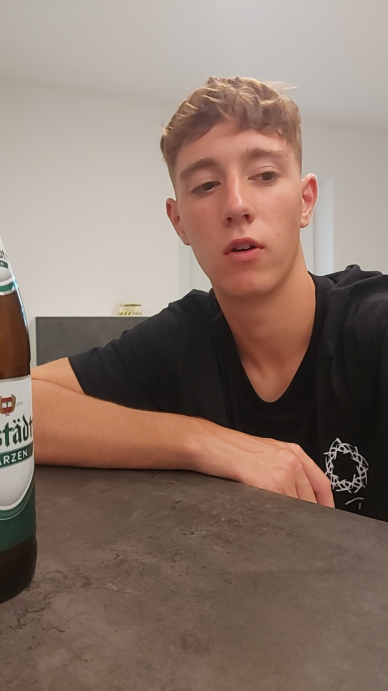
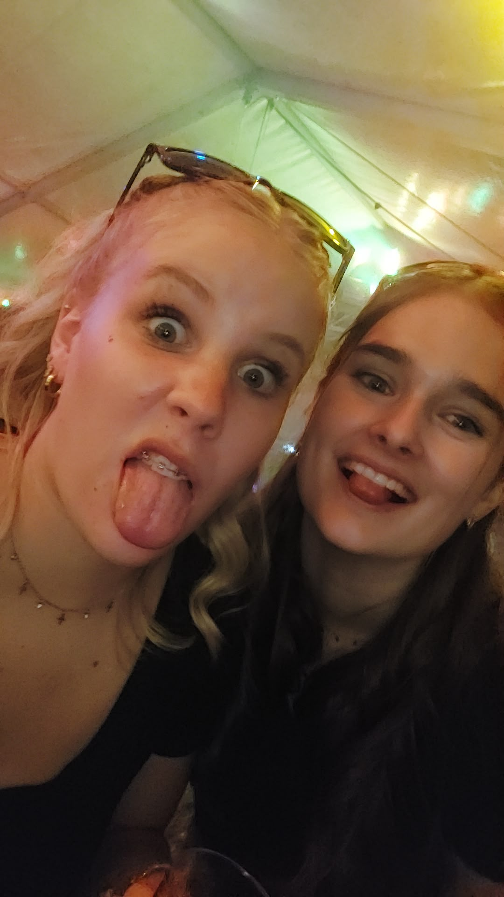
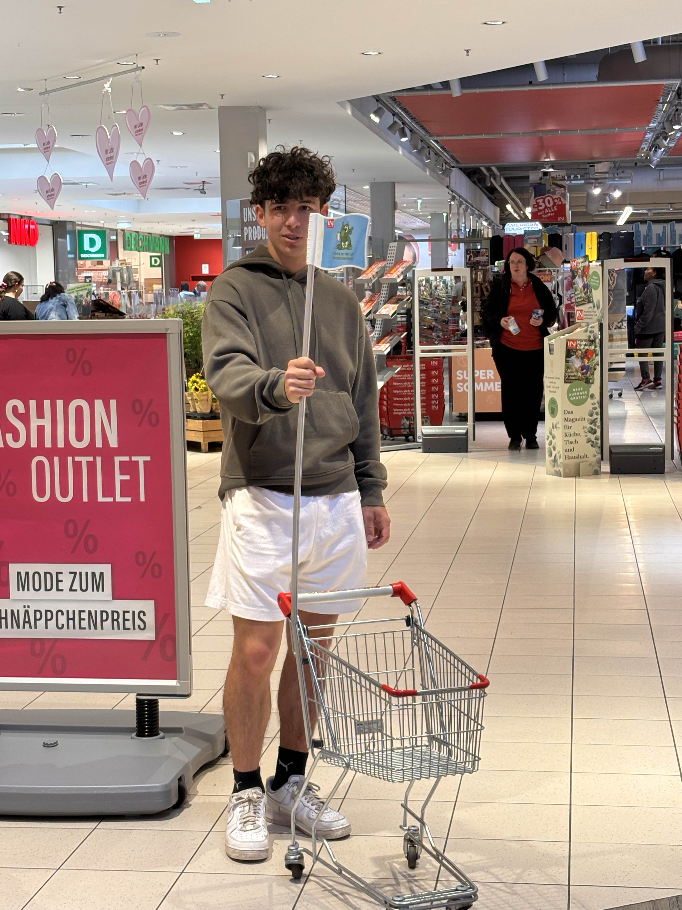
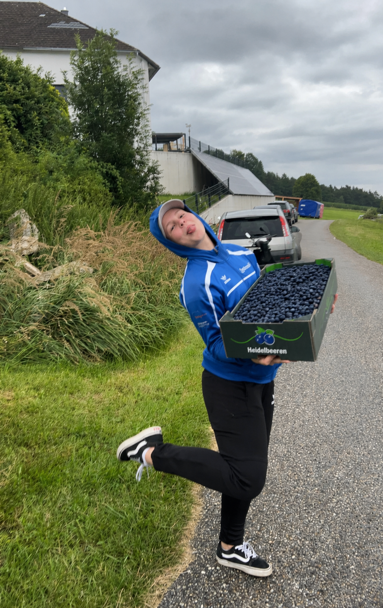

Kapitel eins
18 Gründe, warum Magdi legendär ist
Die Reihenfolge mischt sich jedes Mal neu. Antippen, aufklappen, innerlich nicken.
Familienakte
Der absolut offizielle Familienbaum
Entstanden am Attersee, bestätigt durch Autofahrten, Insider und sehr fragwürdige Verwandtschaftsverhältnisse.
Ursprungsmythos: Ali und Mo vorne im Auto, Magdi hinten. Es war sofort klar: Das ist jetzt eine Familie am Weg in den Urlaub. Später wurde das Ganze durch ein sehr ehrliches "MAMMMAAAAA i brauch mei Handy!!" historisch einzementiert.
Großeltern
Heigl
Der Papa. Gerüchten zufolge ist er gar nicht der Papa von Ali.Eltern
Ali
Papa, Organisator und Verursacher mancher Familienereignisse.
Mo
Mama beziehungsweise Ehefrau. Klingt komisch, ist aber aktenkundig.Kinder
Magdi
Tochter, Hauptperson und Familienmitglied mit maximaler Lebensfreude.
Luca
Adoptivsohn. Wurde aufgenommen, weil diese Familie offenbar noch mehr Handlung gebraucht hat.Weitere Beteiligte

Sarah / Sandra
Familienhelferin. Name situationsabhängig, Funktion unverzichtbar.
Tobias
Einseitige Affäre von Ali. Juristisch vermutlich schwierig.Lena
Freundin von Luca. Offiziell im Umfeld registriert.
Julia
Neue Freundin von Tobias und damit mitten in der Familienakte.
Sevi
Onkel und Bruder. Seriöse Position in einer unseriösen Familienstruktur.
Beweismittel H
Die Heidelbeer-Akte
Alles begann bei Magdis 15. Geburtstag, als Ali zuhause einfach alle Heidelbeeren von den Heidelbeerstauden gegessen hat.

Kurzer Aktenvermerk
Seitdem sind Heidelbeeren kein normales Obst mehr, sondern ein offizieller Insider. Besonders stark: b2b2b jedes Jahr eine Heidelbeerstaude zum Geburtstag, immer wieder von Magdi und unterschiedlichen Freundinnen. Das ist entweder ein sehr gutes Geschenk oder ein langfristiges Landwirtschaftsprojekt.
Ausstellung
Magdi-Museum
Eine fake-seriöse Galerie. Antippen öffnet das jeweilige Ausstellungsstück groß.
Gruppen-Lore
Die wichtigsten Kapitel
Kurz gehalten, aber historisch natürlich höchst relevant.
27.07.2008
Magdi erscheint
Der Anfang einer ziemlich lebensfrohen, humorvollen und hilfsbereiten Hauptfigur.
2018
Hauptschul-Paralleluniversum
Magdi ist zwar mit keinem direkt in der Klasse, aber Mo, Lukas, Tobi und Sarah sind in der Parallelklasse. Nah genug für die Geschichte.
Seit den Minikids
Die glorreichen Vier
Luca, Marcel, Lukas und Mo sind schon früh beim Trainingslager dabei. Aus Fussball wird mit der Zeit eine Freundesgruppe mit erstaunlich langer Laufzeit. Ali und Tobi stoßen bald dazu. Unendlich viele Geschichten und Momente gemeinsam enstehen.
Irgendwann danach
Viki kommt dazu
Über Lukas wird Viki mehr Teil der Runde. Die Geschichte endet irgendwann, zum ehemaligen Trauern von Luki, jedoch hat die Gruppe wieder ein neues Kapitel bekommen und ein weiteres Mitglied.
15. Geburtstag
Der Heidelbeer-Vorfall
Ali isst alle Heidelbeeren von Magdis (Karins) Heidelbeerstauden. Seitdem ist das Thema offiziell nicht mehr erledigt.
P.S. Der Shopping-Trip muss noch immer nachgeholt werden!
Danach, b2b2b
Die Heidelbeerstauden-Ära
Jedes Jahr wieder eine Heidelbeerstaude zum Geburtstag. Ein Geschenk, ein Insider, vielleicht irgendwann ein Wald.
Attersee 2024
MAMMMAAAAA i brauch mei Handy!!
Die Familiengründung. Ali und Mo vorne, Magdi hinten, Familienurlaub-Vibes. Ab da war die Fake-Familie praktisch offiziell und ist seit dem immer wieder gewachsen.
Zell am See 2025
Das Einhorn-Kapitel
Urlaub, Wasser, Gruppe und ein riesiges aufblasbares Schwimm-Einhorn. Mehr Symbolbild braucht dieses Kapitel nicht. Auch anwesend waren ganz vile begeisterte Rentner, die wohl noch nie so etwas spannendes in ihrem doch schon relativ langem Leben erlebt hatten (und auch ein paar Araber).
29.06.2026
Der LAP-Plot-Twist
Magdi tut so, als hätte sie es nicht geschafft, lädt alle zum Frustsaufen ein und zieht dann die wohl unnötigste, aber sehr starke Täuschung des Jahres durch. Ob es was bedeuten mag, dass ihr jeder geglaubt hat?
Heute: 27.07.2026
18. Geburtstag
Magdi wird 18. Die Seite hier ist der offizielle Beweis, dass sie ein bisschen gefeiert, ein bisschen verarscht und sehr gern gehabt wird.
Zum Schluss
Eine ehrliche Nachricht
Liebe Magdi,
alles Gute zu deinem 18. Geburtstag. Ich hoffe, du weißt, wie unglaublich gern ich dich habe und wie froh ich bin, dass du Teil von meinem Leben bist. Mit dir wird es selten langweilig, meistens lustig und sehr oft genau die Art von Chaos, an die man sich später gern erinnert.
Ich finde es unglaublich schön, wie lebensfroh du bist, wie viel Humor du hast und wie selbstverständlich man sich auf dich verlassen kann. Du bist bei jedem Blödsinn dabei, aber trotzdem jemand, der da ist, wenn man dich braucht. Genau das macht dich so besonders.
Bleib bitte so, wie du bist: abenteuerlustig, hilfsbereit, herzlich, lustig und voller Energie. Ich wünsche dir für alles, was jetzt kommt, nur das Beste, viele gute Menschen um dich herum, viele schöne Erinnerungen, einen Job der dir gefällt 👮🏼 und natürlich genug Heidelbeeren.
- Dein Papa